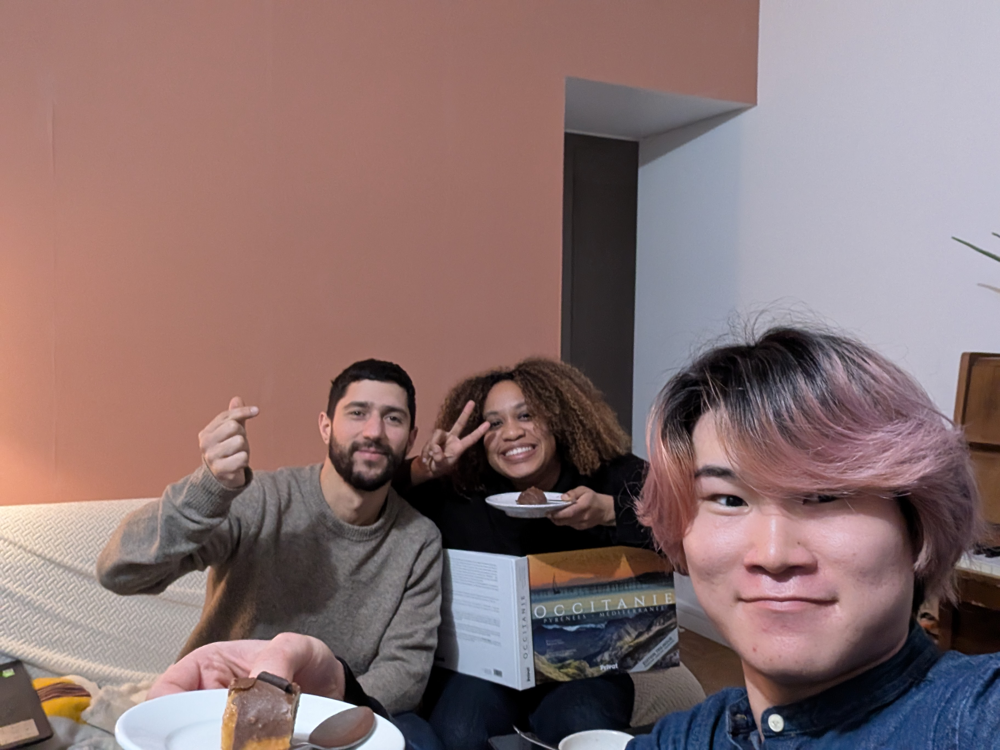
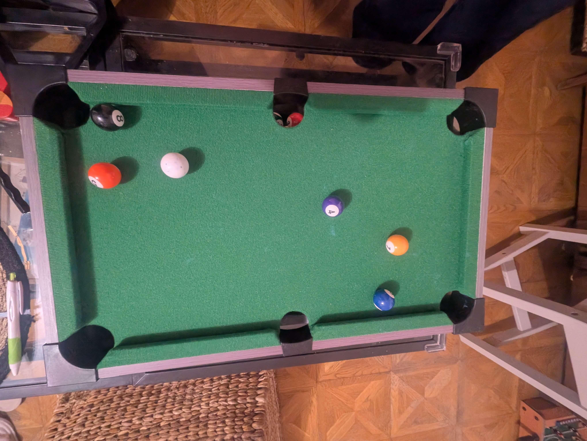

Day 01
Budapest → Paris
16:40発、20:00着。フランス人の家の部屋で爆睡。
-
16:40 Budapest 発
一人で空港へ。ここからフランス1週間、宿は全部他人の家のに泊まらしてくれると願っている頃。旅行者アプリで4人のフランス人の家に順番に泊めてもらう段取りと、どこをどの順番で回るのか決めている状態。
-
20:00 Paris 到着
空港着。ホストとはアプリでやり取りしただけ。ここから電車でホスト宅へ。向かうべき場所間違えてたみたいで焦った、、
-
深夜 ホスト宅、到着
夜遅くやったのに、飯も作ってくれて快く受け入れてくれた。

-
就寝 子供部屋にお泊まり
そのフランス人の家の、部屋で寝る準備をする前に小さなビリヤードで遊んだ。旅、始まったー！って気がした
